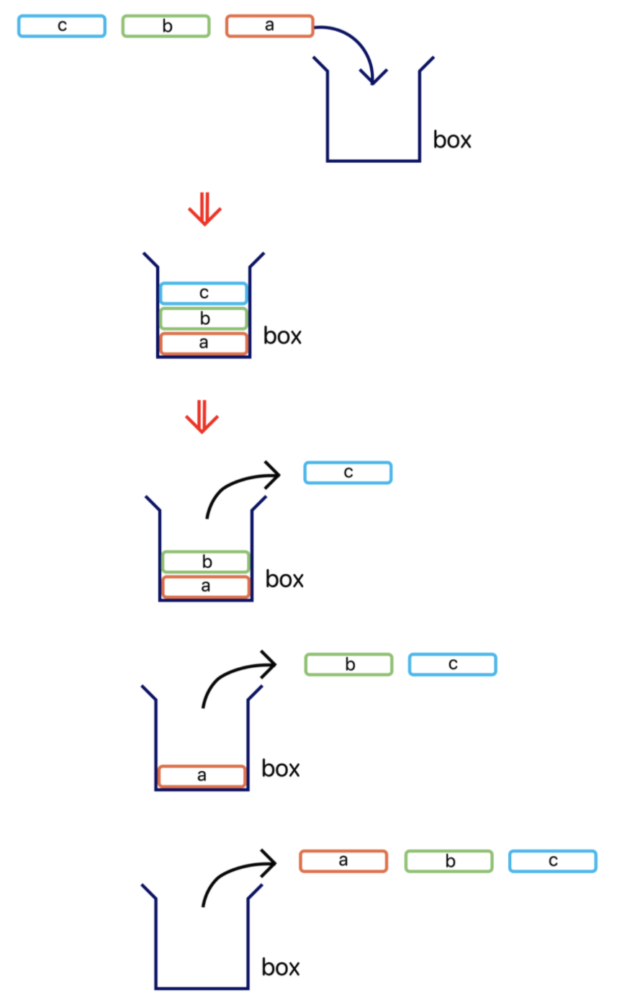

스택(Stack)과 힙(Heap)은 무엇일까?
[자료구조]
민지
2024.01.09 15:39 조회 : 6,266
1. 스택이란?
스택은 한쪽 끝에서만 데이터를 넣고 뺄 수 있는 제한적으로 접근할 수 있는 후입선출(Last-In-First-Out) 형태의 선형 자료구조이다.
2. 스택의 작동 원리
스택은 기본적으로 후입선출(나중에 들어온 데이터가 가장 먼저 나가는) 구조로 이루어져 있다.
3. 스택 제공 연산 종류
- pop() : 스택에서 가장 위에 있는 항목을 제거한다.
- push(item): item 하나를 스택의 가장 윗 부분에 추가한다.
- peek() : 스택의 가장 위에 있는 항목을 반환한다.
- isEmpty() : 스택이 비어 있을 때 true를 반환한다.
0